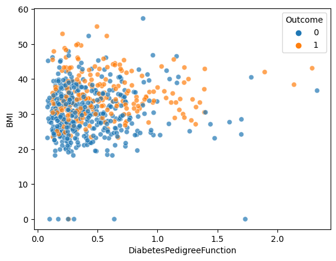

---
title: "당뇨병 예측"
author: "이정민"
date: "21/03/2024"
categories:
- Machine Learning
---#!pip autogluon
#!pip install autogluon.edaImport
import numpy as np
import pandas as pd
import matplotlib.pyplot as plt
import seaborn as sns
import sklearn.preprocessing
import sklearn.impute
import IPython
import os
import warnings
warnings.filterwarnings('ignore')
from sklearn.impute import SimpleImputer
from sklearn.preprocessing import StandardScaler
df_train = pd.read_csv("/content/train.csv")
df_test = pd.read_csv("/content/test.csv")
submission = pd.read_csv("/content/sample_submission.csv")
from sklearn.model_selection import GridSearchCV
from sklearn.linear_model import LogisticRegression
from sklearn.model_selection import StratifiedKFoldimport autogluon.eda.auto as auto
from autogluon.tabular import TabularPredictor
from autogluon.common import space전처리
df_train # (1)값이 0인 데이터들을 전처리 해줘야 할 것 같음..| ID | Pregnancies | Glucose | BloodPressure | SkinThickness | Insulin | BMI | DiabetesPedigreeFunction | Age | Outcome | |
|---|---|---|---|---|---|---|---|---|---|---|
| 0 | TRAIN_000 | 4 | 103 | 60 | 33 | 192 | 24.0 | 0.966 | 33 | 0 |
| 1 | TRAIN_001 | 10 | 133 | 68 | 0 | 0 | 27.0 | 0.245 | 36 | 0 |
| 2 | TRAIN_002 | 4 | 112 | 78 | 40 | 0 | 39.4 | 0.236 | 38 | 0 |
| 3 | TRAIN_003 | 1 | 119 | 88 | 41 | 170 | 45.3 | 0.507 | 26 | 0 |
| 4 | TRAIN_004 | 1 | 114 | 66 | 36 | 200 | 38.1 | 0.289 | 21 | 0 |
| ... | ... | ... | ... | ... | ... | ... | ... | ... | ... | ... |
| 647 | TRAIN_647 | 1 | 91 | 64 | 24 | 0 | 29.2 | 0.192 | 21 | 0 |
| 648 | TRAIN_648 | 10 | 122 | 68 | 0 | 0 | 31.2 | 0.258 | 41 | 0 |
| 649 | TRAIN_649 | 8 | 84 | 74 | 31 | 0 | 38.3 | 0.457 | 39 | 0 |
| 650 | TRAIN_650 | 2 | 81 | 72 | 15 | 76 | 30.1 | 0.547 | 25 | 0 |
| 651 | TRAIN_651 | 1 | 107 | 68 | 19 | 0 | 26.5 | 0.165 | 24 | 0 |
652 rows × 10 columns
sns.scatterplot(
df_train,
x='DiabetesPedigreeFunction',
y='BMI',
hue='Outcome',
alpha=0.7
)
# 이상치들이 많다.. 'DiabetesPedigreeFunction' 가 1.5이상이면 0.5쯤으로 치환해보자..
그리드 서치를 이용한 하이퍼파라메타 수정
# Extract features and target variable
X = pd.get_dummies(X_train_sclaed2.loc[:,'Pregnancies':'Age'])
y = X_train_sclaed2[['Outcome']]
# Define the logistic regression model
logistic_reg = LogisticRegression()
# StratifiedKFold를 사용하여 데이터를 분할
cv = StratifiedKFold(n_splits=5, shuffle=True, random_state=42)
# Define the parameter grid
param_grid = {
'C': [0.001, 0.01, 0.1, 1, 10, 100],
'solver': ['newton-cg', 'lbfgs', 'liblinear', 'sag', 'saga'],
'max_iter': [100, 200, 300, 400, 500]
}
# Create GridSearchCV object
grid_search = GridSearchCV(logistic_reg, param_grid, cv=cv, scoring='accuracy')
# Fit GridSearchCV to data
grid_search.fit(X, y)
# Extract best estimator and its score
best_estimator = grid_search.best_estimator_
best_score = grid_search.best_score_
print("Best parameters:", grid_search.best_params_)
print("Best score:", best_score)변수 설정
auto.quick_fit(
train_data=X_train_sclaed2,
label='Outcome',
show_feature_importance_barplots=True
)No path specified. Models will be saved in: "AutogluonModels/ag-20240321_070806/"Model Prediction for Outcome
Using validation data for Test points
Model Leaderboard
| model | score_test | score_val | pred_time_test | pred_time_val | fit_time | pred_time_test_marginal | pred_time_val_marginal | fit_time_marginal | stack_level | can_infer | fit_order | |
|---|---|---|---|---|---|---|---|---|---|---|---|---|
| 0 | LightGBMXT | 0.755102 | 0.793478 | 0.003299 | 0.003121 | 0.363972 | 0.003299 | 0.003121 | 0.363972 | 1 | True | 1 |
Feature Importance for Trained Model
| importance | stddev | p_value | n | p99_high | p99_low | |
|---|---|---|---|---|---|---|
| Glucose | 1.163265e-01 | 0.015890 | 0.000041 | 5 | 0.149045 | 0.083608 |
| BMI | 1.224490e-02 | 0.015972 | 0.080814 | 5 | 0.045131 | -0.020641 |
| Pregnancies | 1.020408e-02 | 0.013008 | 0.077136 | 5 | 0.036987 | -0.016579 |
| BloodPressure | 5.102041e-03 | 0.003608 | 0.017055 | 5 | 0.012530 | -0.002326 |
| SkinThickness | 1.020408e-03 | 0.004269 | 0.310654 | 5 | 0.009810 | -0.007769 |
| Insulin | 1.020408e-03 | 0.010456 | 0.418970 | 5 | 0.022550 | -0.020509 |
| Age | -4.440892e-17 | 0.006249 | 0.500000 | 5 | 0.012866 | -0.012866 |
| DiabetesPedigreeFunction | -5.102041e-03 | 0.024469 | 0.667353 | 5 | 0.045279 | -0.055483 |
Rows with the highest prediction error
Rows in this category worth inspecting for the causes of the error
| Pregnancies | Glucose | BloodPressure | SkinThickness | Insulin | BMI | DiabetesPedigreeFunction | Age | Outcome | 0 | 1 | error | |
|---|---|---|---|---|---|---|---|---|---|---|---|---|
| 5 | -0.518286 | -1.431480 | -1.887832 | 0.328284 | -0.800806 | -0.193986 | -0.705937 | -0.635655 | 1 | 0.906169 | 0.093831 | 0.812337 |
| 477 | 0.000000 | -0.579660 | -0.698307 | 0.906640 | -1.075827 | 0.195752 | 0.229493 | -0.974186 | 1 | 0.870545 | 0.129455 | 0.741090 |
| 567 | 0.000000 | -0.481373 | -0.868239 | 0.096941 | -0.961235 | 0.645451 | 1.111368 | -0.720288 | 1 | 0.805917 | 0.194083 | 0.611834 |
| 379 | -0.518286 | -0.022701 | -1.717900 | 0.000000 | 0.000000 | 0.555511 | -1.137948 | -0.720288 | 1 | 0.749880 | 0.250120 | 0.499760 |
| 210 | 2.535578 | -1.234906 | -0.018578 | 0.212612 | 0.000000 | -0.388855 | -0.530990 | 1.057002 | 1 | 0.742102 | 0.257898 | 0.484204 |
| 246 | -0.178968 | -0.415849 | -0.698307 | 1.716339 | -0.674755 | 0.375632 | 1.639779 | -0.635655 | 1 | 0.735923 | 0.264077 | 0.471846 |
| 211 | 0.499669 | -0.645185 | 0.831083 | 0.000000 | 0.000000 | -0.223966 | -0.948720 | 0.210673 | 1 | 0.726287 | 0.273712 | 0.452575 |
| 309 | -0.518286 | 0.272160 | 0.491219 | -0.712758 | -0.903939 | -0.583725 | -0.438161 | 0.041408 | 1 | 0.725646 | 0.274354 | 0.451293 |
| 292 | -0.178968 | 0.403209 | -0.018578 | 0.000000 | 0.000000 | -1.273262 | -0.602397 | 2.241861 | 1 | 0.714604 | 0.285396 | 0.429209 |
| 354 | -1.196923 | -0.219275 | -0.188510 | 0.096941 | -0.709132 | 0.345652 | 0.297330 | -0.127858 | 1 | 0.709893 | 0.290107 | 0.419787 |
Rows with the least distance vs other class
Rows in this category are the closest to the decision boundary vs the other class and are good candidates for additional labeling
| Pregnancies | Glucose | BloodPressure | SkinThickness | Insulin | BMI | DiabetesPedigreeFunction | Age | Outcome | 0 | 1 | error | |
|---|---|---|---|---|---|---|---|---|---|---|---|---|
| 611 | -0.178968 | -0.055463 | -0.358442 | 0.000000 | 0.000000 | -0.403845 | 0.939991 | 0.041408 | 0 | 0.491737 | 0.508263 | 0.016526 |
| 368 | -0.178968 | 0.665307 | 1.170947 | 0.000000 | 0.000000 | 1.754706 | 0.711489 | -0.974186 | 1 | 0.508290 | 0.491710 | 0.016580 |
| 92 | 1.856942 | 0.567020 | 0.661151 | 0.000000 | 0.000000 | -0.778594 | 3.553483 | 1.987963 | 0 | 0.481925 | 0.518075 | 0.036150 |
| 372 | 0.499669 | 2.368946 | 0.491219 | 0.000000 | 0.000000 | -1.318232 | -1.130808 | 2.157229 | 1 | 0.519181 | 0.480819 | 0.038361 |
| 25 | -1.196923 | 0.894643 | -0.358442 | -0.018730 | -0.353897 | -0.448815 | -0.345332 | 0.718470 | 1 | 0.524848 | 0.475152 | 0.049697 |
| 217 | 1.856942 | 1.320553 | 1.001015 | 0.000000 | 0.000000 | -0.688654 | -0.941579 | 1.734064 | 0 | 0.472799 | 0.527201 | 0.054402 |
| 145 | -0.178968 | 0.960168 | 1.510812 | 1.022311 | 0.000000 | -0.388855 | -0.541701 | 0.210673 | 0 | 0.471797 | 0.528203 | 0.056407 |
| 434 | -0.857604 | -0.415849 | 1.680744 | 0.000000 | 0.000000 | 1.559837 | 1.425558 | 1.734064 | 0 | 0.471443 | 0.528557 | 0.057113 |
| 496 | -0.518286 | 1.910274 | -0.698307 | -0.481415 | -1.007072 | 0.255712 | -0.623819 | -0.635655 | 0 | 0.466142 | 0.533858 | 0.067716 |
| 214 | 0.838987 | -0.252037 | -0.698307 | 0.000000 | 0.000000 | -0.733624 | 1.022109 | 0.041408 | 1 | 0.534523 | 0.465477 | 0.069045 |
GPT한테도 물어보자..
나이 (Age): 나이는 당뇨병 발병 위험에 중요한 영향을 미칩니다. 일반적으로 나이가 들면 인슐린 저항성이 증가하고, 신체의 대사 활동이 감소함에 따라 당뇨병 발병 위험이 증가합니다.
당뇨 혈통 기능 (Diabetes Pedigree Function): 이것은 당뇨병과 관련된 가족력을 나타냅니다. 당뇨병은 유전적 요인이 상당한 영향을 미칩니다. 가족 중에서 당뇨병이 있는 경우, 해당 개인의 당뇨병 발병 위험이 증가할 수 있습니다.
최종코드
# 전처리
## (1) 0값 치환
imputer = SimpleImputer(missing_values=0, strategy='mean')
df_train_2 = imputer.fit_transform(df_train.loc[:,'Pregnancies':'Age'])
df_test_2 = imputer.fit_transform(df_test.loc[:,'Pregnancies':'Age'])
df_train_imputed = pd.DataFrame(df_train_2, columns=df_train.loc[:,'Pregnancies':'Age'].columns)
df_train_imputed['Outcome'] = df_train['Outcome']
df_test_2_imputed = pd.DataFrame(df_test_2, columns=df_test.loc[:,'Pregnancies':'Age'].columns)
## (2) 이상치 변환
df_train_imputed.loc[df_train_imputed['DiabetesPedigreeFunction'] > 1.5, 'DiabetesPedigreeFunction'] = 0.5
df_test_2_imputed.loc[df_test_2_imputed['DiabetesPedigreeFunction'] > 1.5, 'DiabetesPedigreeFunction'] = 0.5
## (3) 스케일 조정
scaler = StandardScaler()
X_train_sclaed = scaler.fit_transform(df_train_imputed.loc[:,'Pregnancies':'Age'])
X_train_sclaed2 = pd.DataFrame(X_train_sclaed, columns=df_train.loc[:,'Pregnancies':'Age'].columns) #
X_train_sclaed2['Outcome'] = df_train['Outcome']
df_test_2_imputed2 = scaler.transform(df_test_2_imputed)
df_test_2_imputed3 = pd.DataFrame(df_test_2_imputed2, columns=df_test.loc[:,'Pregnancies':'Age'].columns) #
#----------
X = pd.get_dummies(X_train_sclaed2.loc[:,['Glucose','BMI','Age','DiabetesPedigreeFunction']])
y = X_train_sclaed2[['Outcome']]
predictr = sklearn.linear_model.LogisticRegression(solver='newton-cg',C=0.1,max_iter=100)
predictr.fit(X,y)
predictr.score(X,y)0.7714723926380368제출
XX = pd.get_dummies(df_test_2_imputed3.loc[:,['DiabetesPedigreeFunction','BMI','Age','Glucose','BloodPressure']])
submission.assign(Outcome = predictr.predict(XX)).to_csv('Submission_samsip',index=False)